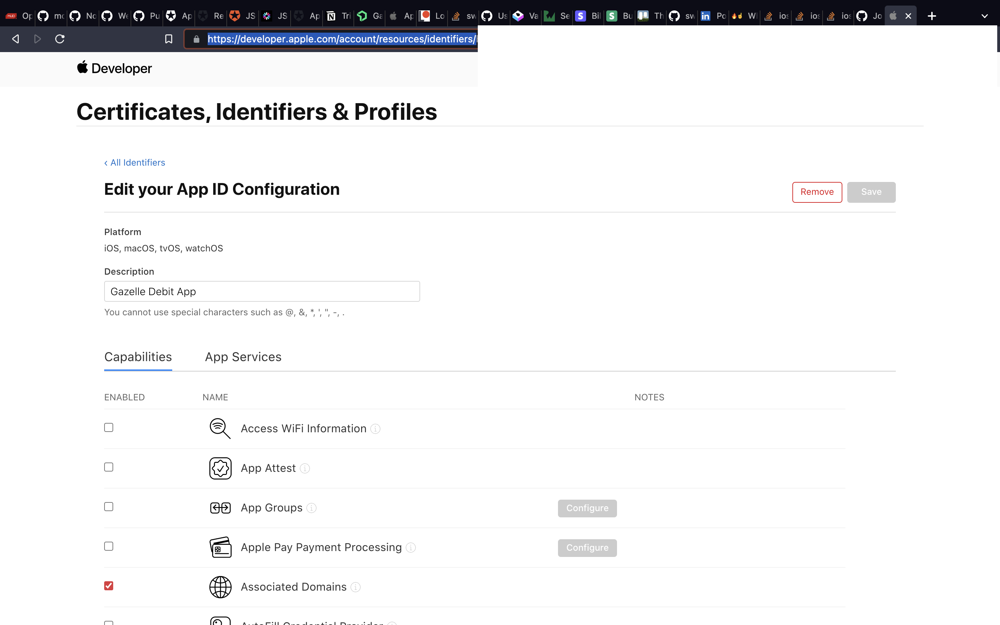
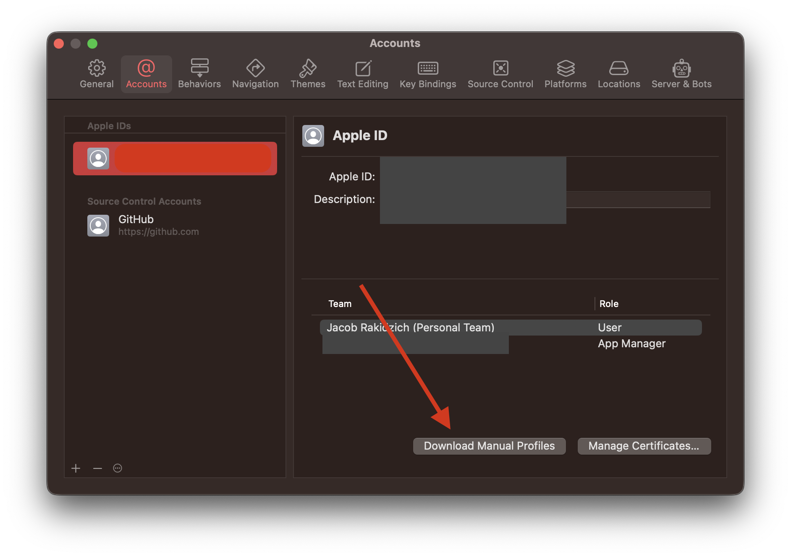

Deep Links
This is a fun one. Getting a link to open your app is so satisfying!
However, it's not all sunshine ☀️ and rainbows 🌈
Because of caching on Apple's CDN, getting it configured initially can be burdensome. In this article, I hope to save you some of the headaches I went through.
A Birds Eye View
If you're like me, you've had a few questions about deep linking: Why do some links in a website forward you to their app, but others don't? How does Apple know it should open an app?
Some Context
There are a lot of working parts here. First, your app must have been provisioned to support Associated Domains. Second, there needs to be an apple-app-site-association file hosted in the .well-known/ directory on your site that tells apple what apps respond to what paths of your site. Finally, your app needs to know how to handle the incoming links.
How it works
When a user downloads—or updates—your application and opens it, the operating system will see the Associated Domains capability of your app and it will tell Apple to search for the apple-app-site-association for your domain. After fetching it, the os will register the URLs that should open your app and store it in their CDN. Then, if you tap a link—or scan a QR code—that matches a path in the site association file, the app will open instead of the browser. If you intentionally open a browser and navigate to the URL manually, a button should appear at the top of your browser asking if you want to open the page in the app instead.
Provisioning the Associated Domains Capability
Your application is "provisioned" by Apple using a Signing Certificate and a Provisioning Profile. The Provisioning Profile contains a list of capabilities your application is allowed to use. What we need to do is update that profile and make Xcode aware of it.
Update the App's Capabilities with Apple
To do so we first need to update your app's identifier to contain the capability. Sign into Apple's Developer Console then find your App Identifier. Once there, check the box for Associated Domains and click save.
Download the Profile for Development
When that is done, you'll need to refresh your provisioning profile. From Xcode's Settings -> Accounts pane, make sure you're signed into your Apple account, and click "Download manual profiles"
Setup the Associated Domains Capability
Finally, we need to update your application's capabilities. Navigate to your app's target -> Signing & Capabilities. There, click on + Capability and select "Associated Domains." Then, in the Capability menu, click the + at the bottom left and enter applinks:{{yourdomain}}. The applinks: prefix is important. That is the bit of information that tells Apple you mean to do deep linking. For more information, you can read the docs.
Great! Now that you've done that, we can move on to creating the site association file.
The apple-app-site-association file
The associated domain you just set up will tell apple to look for the apple-app-site-association file at the domain you entered. For example, if you entered applinks:mysite.com Apple will look here: https://mysite.com/.well-known/apple-app-site-association.
First, create your .well-known directory at the root of your site's public folder. Then add a file named apple-app-site-association - even though we're going to put JSON in this file, do not give it a file type.
Now, paste the following JSON into the file.
{
"applinks": {
"details": [
{
"appIDs": [
"{{Your Apple Team ID}}.com.mybundle.identifier"
],
"components": [
{
"/": "/some-path-with-data/*",
"comment": "Matches any URL whose path starts with /some-path-with-data/"
}
]
}
]
}
}
Notice the first JSON object is named applinks? That's the prefix to the Associated Domain capability you added in the last step. You'll need to update a few things here. First, go to Apple's Membership area and find your team ID. Your appID is your Team ID + your app's bundle identifier. Replace the appID above with yours. Then, inside of the components object, we have our first link declaration. After "/": we define a path that will redirect to your app. Right now it's set to /some-path-with-data/*. That means if we clicked a link with a URL of: https://mysite.com/some-path-with-data/link-data-12345 your application would open.
The * is important here. It allows us to start the link with any URL matching https://mysite.com/some-path-with-data/ we can add any data we want after that. You can change that path if you'd like to, or you could add more by creating a new component like so:
"components": [
{
"/": "/some-path-with-data/*",
"comment": "Matches any URL whose path starts with /some-path-with-data/"
},
{
"/": "/my-deep-link-with-no-data/",
"comment": "Matches any URL whose path is exactly /my-deep-link-with-no-data/"
}
]
Great! Now upload that file to your site. Then, we can test that the file exists by making a curl request to Apple's CDN. Open your terminal and paste in this command:
curl -v https://app-site-association.cdn-apple.com/a/v1/yourdomain.com
If you see your JSON in the response, it worked! Your file is formatted properly.
Now, these are cached with Apple's CDN for an hour. If you make any changes to your file and publish them, you won't be able to test the deep link until the cache is refreshed.
These are cached with Apple's CDN for an hour.
Intercepting the Link in SwiftUI
Phew! All the hard work is over. Now for the fun stuff! Go ahead and open your SwiftUI application. To make sure we catch all deep links, open your App.swift file. We're going to add 2 modifiers to your view that will catch the deep links, onOpenURL and onContinueUserActivity - we need to do both.
@main
struct MyApp: App {
var body: some Scene {
WindowGroup {
ContentView()
// This handles Link taps
.onOpenURL { url in
print(url.absoluteString)
}
// This handles QR Code scanning or redirecting from Safari
.onContinueUserActivity(NSUserActivityTypeBrowsingWeb) { userActivity in
guard let url = userActivity.webpageURL else { return }
print(url.absoluteString)
}
}
}
}
Now, when you run your app, go to a URL you specified in your site association file. If you're running a simulator, you can use safari and press the "Open" button that appears at the top of the browser, or you could save a calendar event with the link as a note and tap that. Either way, your app should open and the URL should print to your debugger.
🔥☝️
Deep linking
Great! But how do we do Deep Linking? That's a loaded question, and each application will have different needs and implementations. To give you an example of how you could handle a deep link, we'll add a few things.
I like to enumerate the deep links I put into my applications. Go ahead and add a new file named DeepLinkDestiniation.swift and add the following code:
enum DeepLinkDestination: String {
// You can name this whatever you want, but the value on the right
// needs to match the path you added to the site association file
// not including a "*" if you had one
case deepLinkTest = "deep-link-test/"
private var urlRoot: String {
"https://yourDomain.com/"
}
var urlString: String {
urlRoot + rawValue
}
}
Now in your App.swift file, we're going to add a few things:
- A
@Statevariable to hold the URL - A new view variable that will show different content if a deep link came in
- And the code to set the URL
struct MyApp: App {
// This value will allow us to act on the deep links
@State var url: URL? = nil
@ViewBuilder
var content: some View {
if let url = url, url.absoluteString.starts(with: DeepLinkDestination.deepLinkTest.urlString) {
VStack {
Text("It's Alive!")
Text(url.absoluteString)
// if there is any additional info on the end, display it
Text("Deep Link Info: \(url.absoluteString.replacingOccurrences(of: DeepLinkDestination.deepLinkTest.urlString, with: ""))")
}
} else {
ContentView()
}
}
var body: some Scene {
WindowGroup {
content // Use the new view
.onOpenURL { url in
// Set the url to update the content
self.url = url
}
.onContinueUserActivity(NSUserActivityTypeBrowsingWeb) { userActivity in
guard let url = userActivity.webpageURL else { return }
// Set the url to update the content
self.url = url
}
}
}
}
That's it! Now you know how to set a SwiftUI app up to handle deep links, create and test the site association file, and provision your app to accept the links. I hope this helped!